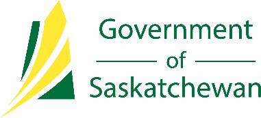
SINP – OASIS Посібник користувача для заявників
(User Guide for Applicants)
(Ministry of Immigration and Career Training)
Government of Saskatchewan — Ministry of Immigration and Career Training
Immigration Services Branch — Saskatchewan Immigrant Nominee Program
7th Floor, 1945 Hamilton Street, Regina, Saskatchewan S4P 2C8
Телефон: (Canada 001) 833-613-0485 · Факс: (Canada 001) 306-798-0713
Запитання (Inquiries): immigration@gov.sk.ca
Веб-сайт: www.saskatchewan.ca/sinp
1.0 Вступ і вхід у систему (Introduction and Log On)
Цей посібник пояснює, як отримати доступ і використовувати різні екрани, пов'язані з онлайн-заявками SINP (SINP Online Applications) у системі OASIS.
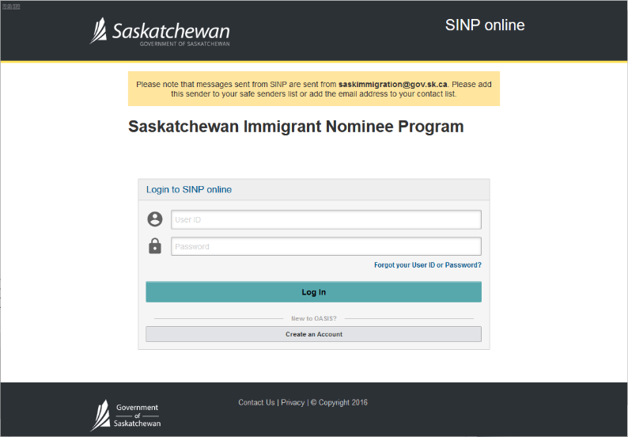
Натисніть на наступне посилання, щоб перейти до SINP Online: https://immigration.saskatchewan.ca/apex/f?p=305:101:816149727231
Відобразиться екран привітання (Welcome). Спочатку вам потрібно створити обліковий запис, щоб отримати доступ до системи.
Ми наполегливо рекомендуємо вам ознайомитися з усіма вимогами до документації та форм, які необхідно долучити до вашої заявки, а також вивчити наведені нижче критерії, перш ніж почати оформлення заявки.
Натисніть на посилання нижче для категорії іноземних кваліфікованих фахівців (International Skilled Worker Category): Посилання на програму International Skilled Worker
Натисніть на посилання нижче для категорії з досвідом роботи в Саскачевані (Saskatchewan Experience Category): Посилання на програму Saskatchewan Experience
1.1 Реєстрація в OASIS (Register on OASIS)
- Натисніть кнопку Create an Account (Створити обліковий запис).
- Натисніть Select a Registration Type (Виберіть тип реєстрації).
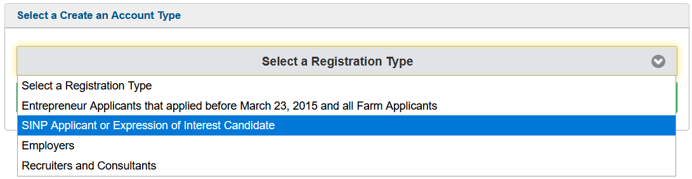
- Виберіть SINP Applicant or Expression of Interest Candidate (Заявник SINP або кандидат із вираженням зацікавленості) і натисніть Continue (Продовжити).
- Створіть ім'я користувача (Username). Ім'я користувача не повинно містити пробілів або будь-яких спеціальних символів, крім нижнього підкреслення ('_'). Ваше ім'я користувача використовуватиметься для доступу до вашого облікового запису OASIS.
- Введіть ваше ім'я (First Name), по батькові/друге ім'я (Middle Name) та прізвище (Family (Last) Name) точно так, як вони вказані у вашому паспорті.
- Введіть вашу дату народження (Date of Birth) у форматі ДД-Міс-РРРР (DD-Mon-YYYY).
- Введіть вашу адресу електронної пошти (Email address).

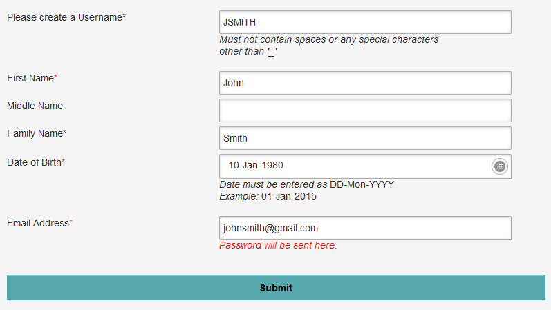
Натисніть Submit (Надіслати).
Вам буде надіслано електронний лист із вашим ім'ям користувача та паролем. Ця інформація знадобиться вам для входу в OASIS.
1.2 Вхід в OASIS (Login to OASIS)
- На сторінці входу введіть ім'я користувача та пароль, надіслані в електронному листі, і натисніть Login (Увійти).
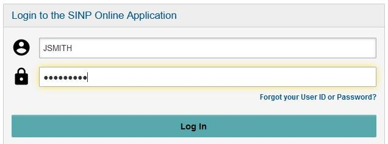
- Потім система запропонує вам змінити пароль.
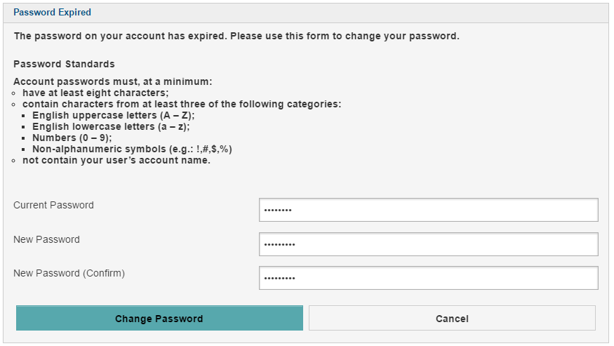
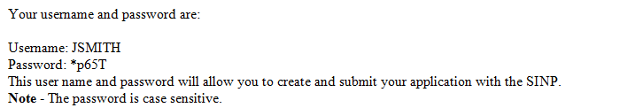
1.3 Згода на розкриття особистої інформації (Authority to Disclose Personal Information)
Щоб продовжити перший вхід в OASIS, усі користувачі повинні погодитися на розкриття інформації, натиснувши кнопку “I AGREE” (Я ЗГОДЕН).
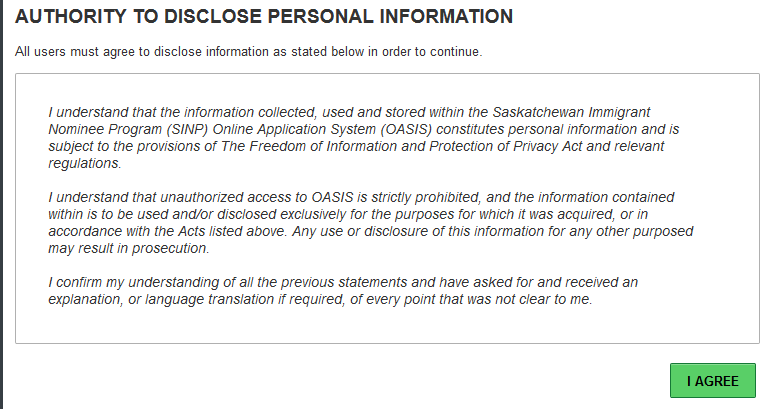
1.4 Відновлення ID користувача або пароля (User ID or Password Recovery)
Щоб відновити доступ до вашого облікового запису, на сторінці входу натисніть “Forgot your User ID or Password?” (Забули свій ID користувача або пароль?), потім виберіть метод відновлення (Recovery Method).
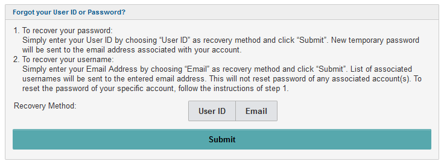
Виберіть “User ID” (ID користувача), щоб скинути пароль. Вам буде запропоновано ввести ім'я користувача, використане під час створення облікового запису. Електронний лист з ім'ям користувача та тимчасовим паролем буде надіслано на адресу електронної пошти, пов'язану з вашим ID користувача (або ім'ям користувача).
Якщо ви хочете відновити свій обліковий запис, використовуючи адресу електронної пошти, виберіть “Email” (Електронна пошта) як метод відновлення. Список імен користувачів, пов'язаних з вашою адресою електронної пошти, буде надіслано вам поштою. Щоб скинути пароль, вам потрібно буде виконати попередній крок, використовуючи метод відновлення “User ID”.
2.0 Початок оформлення заявки (Start your application)

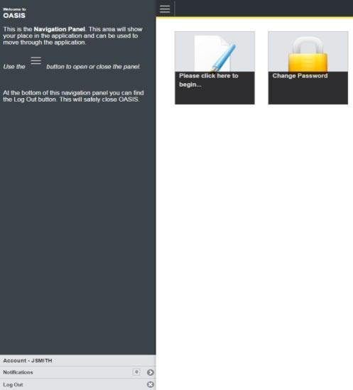
- Під час сканування перекладених документів, будь ласка, скануйте оригінальний документ, переклад англійською або французькою мовою та афідевіт перекладача SINP (SINP Translator Affidavit) як один документ. Форму афідевіту можна знайти тут: https://publications.saskatchewan.ca/#/products/76058
- Щоб зменшити розмір відсканованих документів, SINP не вимагає надання порожніх сторінок вашого паспорта.
- Переконайтеся, що всі відскановані копії чіткі та легко читаються.
- Будь ласка, ознайомтеся з контрольним списком (checklist) для вашої категорії, щоб переконатися, що ваша заявка повністю укомплектована всіма необхідними документами.
Важливе зауваження (Important Note): Якщо у вас є питання, проблеми з ім'ям користувача чи паролем, або вам потрібно скинути пароль; будь ласка, напишіть на immigration@gov.sk.ca або зателефонуйте за номером 1-833-613-0485.
З метою захисту вашої особистої інформації, будь ласка, виходьте із системи SINP Online Application (Log out) і повністю закривайте веб-браузер після завершення сеансу.
2.1 Інформація про заявника / Дані паспорта (Applicant Information / Passport Details)
Заповніть усю інформацію про заявника та дані паспорта, необхідні нижче:
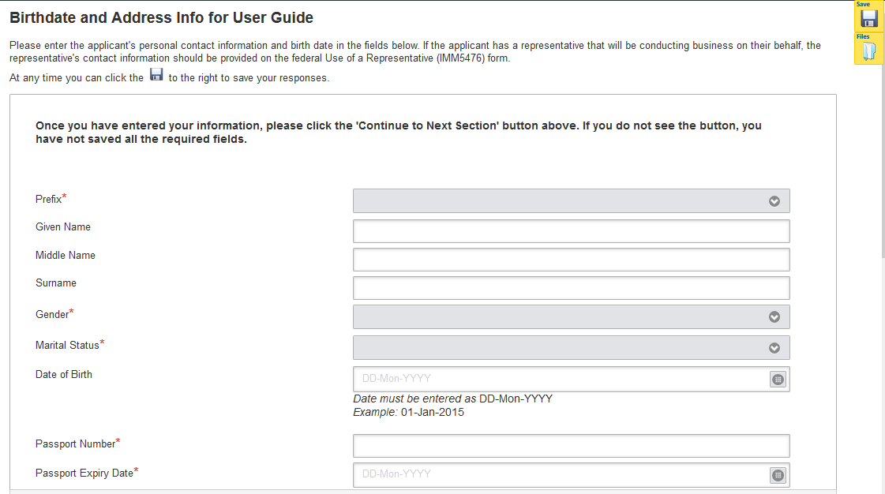
Виберіть передбачуване місце поселення (Intended destination for settlement), потім введіть країну та поточне місто/населений пункт вашого теперішнього проживання.
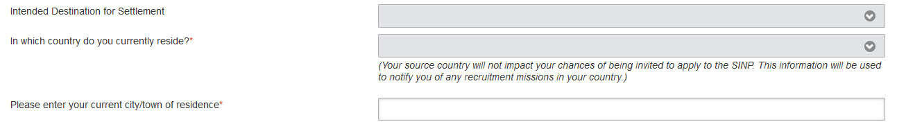
2.2 Адреса проживання/домашня адреса (Residential/Home Address)
Заповніть Адресу проживання/домашню адресу:
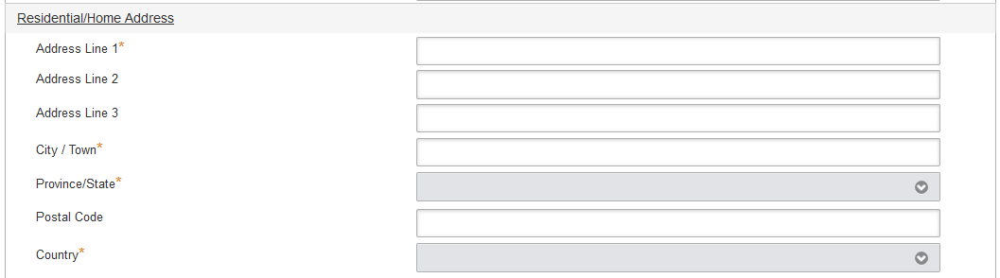
- Якщо ваша домашня адреса перебуває за межами Канади, у розділі Провінція/Штат (Province/State) виберіть International/Outside Canada (Міжнародний/За межами Канади) і впишіть вашу провінцію.
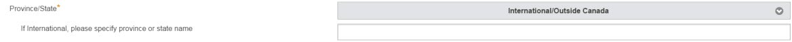
- Якщо ваша домашня адреса збігається з вашою поштовою адресою, виберіть ‘Yes’ (Так) для питання ‘Is the mailing address the same as the Residential/Home Address?’ (Чи збігається поштова адреса з адресою проживання/домашньою адресою?).
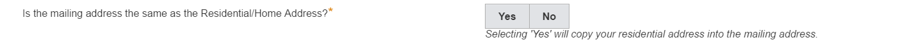
2.3 Поштова адреса та контактна інформація (Mailing Address and Contact Information)
Заповніть поштову адресу та номер телефону, якщо вони відрізняються від вашої домашньої адреси:
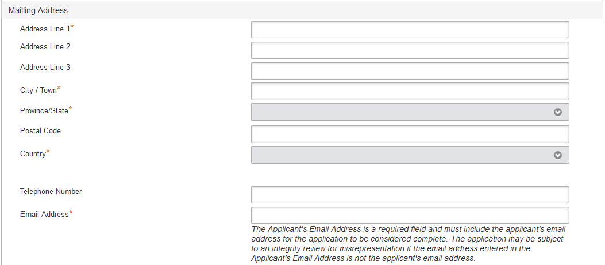
Потім виберіть один варіант, який стосується вас:
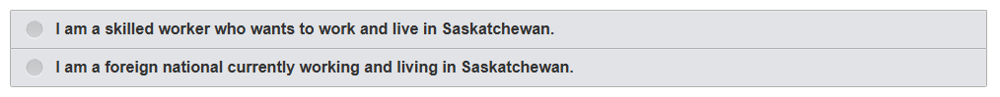
2.4 Представник (Representative)
Виберіть ‘Yes’ (Так), якщо ви призначаєте представника, у протилежному випадку виберіть ‘No’ (Ні).
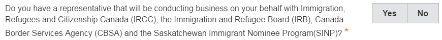
Введіть адресу електронної пошти консультанта, якщо ви вибрали ‘Yes’.
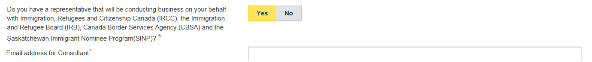
Перейдіть за посиланням нижче для отримання інформації про використання представника у вашій заявці SINP:
Натисніть кнопку нижче, щоб продовжити оформлення заявки.
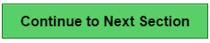
3.0 Попередня заявка та дані заявника (Pre-Application and Applicant Details)
Питання попередньої заявки про пропозицію роботи або працевлаштування призначені для того, щоб спрямувати вас до відповідної категорії заявки.
3.1 Право на подання заявки (Eligibility for Application)
Ви повинні відповісти на низку питань на цій сторінці, щоб визначити ваше право на подання та категорію заявки.
3.1.a Вираження зацікавленості (Expression of Interest)
Якщо ви відповідаєте вимогам підкатегорій «Затребувані професії» (Occupations In-Demand) або Express Entry, ви зможете подати Вираження зацікавленості (EOI).
Якщо ви подаєте EOI для категорії Occupations In-Demand, ви повинні відповісти на питання, як показано нижче, і вибрати NOC вашої передбачуваної професії. Для відповідності вимогам ви повинні мати щонайменше один рік оплачуваного досвіду роботи за останні десять років у сфері вашої освіти чи навчання.
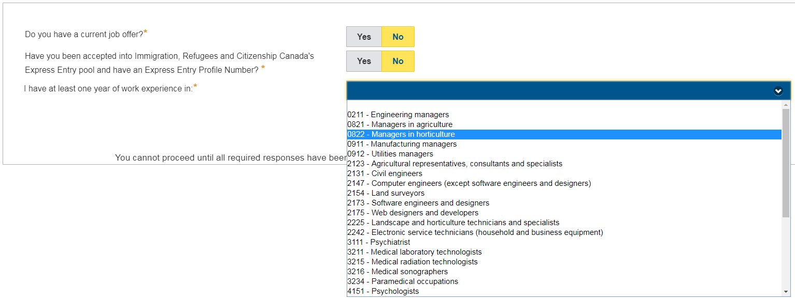
Якщо ви подаєте EOI для Express Entry, ви повинні бути прийняті до пулу Express Entry IRCC, мати номер профілю Express Entry та код перевірки здобувача (Job Seeker Validation Code). Для відповідності вимогам ви повинні мати щонайменше один рік оплачуваного досвіду роботи за останні десять років у сфері вашої освіти чи навчання.
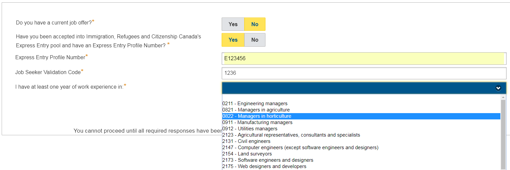
Примітка: Зверніть увагу, що професії в цьому випадному списку можуть змінюватися залежно від прогнозу попиту на робочу силу в Саскачевані.
Ваша передбачувана професія може бути регульованою або вимагати професійної сертифікації. Будь ласка, ознайомтеся з наступними посиланнями щодо цієї вимоги:
- Регульовані професії та вимоги до ліцензування: saskatchewan.ca — Regulated Occupations and Licensing Requirements
- Вимоги SINP, пов'язані з професійним статусом або ліцензуванням: publications.saskatchewan.ca/#/products/102710
Якщо вас запросять подати заявку, SINP розгляне вашу освіту, досвід роботи та передбачувану професію і, за потреби, повідомить вас про необхідність надання необхідної документації. Якщо ваша професія вимагає наявності цієї документації, розгляд вашої заявки буде призупинено, доки ви її не отримаєте.
Ви повинні відповісти на всі питання, що залишилися нижче, перш ніж зможете продовжити.
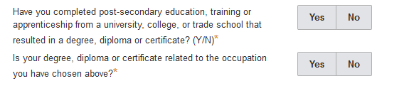
Ви не зможете продовжити, поки всі обов'язкові відповіді не будуть збережені. Будь ласка, дайте відповідь на всі обов'язкові питання і натисніть кнопку Save (Зберегти), щоб продовжити.
Повний набір кроків для Вираження зацікавленості (EOI) можна знайти за адресою: saskatchewan.ca — International Skilled Worker EOI System
3.1.b Напрями з пропозицією роботи (Job Offer Streams)
Якщо у вас є пропозиція постійної роботи на повний робочий день у Саскачевані, ви повинні отримати схвалення оцінки посади роботодавця (Employer Position Assessment - EPA Approval) як доказ цього. Щойно ваш роботодавець додасть ваше ім'я, ви отримаєте схвалення EPA, яке містить деталі пропозиції роботи та терміни, надіслані на вашу особисту адресу електронної пошти.
Ви також повинні відповідати критеріям підкатегорії, щоб мати право на участь.
На сторінці «Право на подання заявки» (Eligibility for Application) вкажіть, чи є у вас чинна пропозиція роботи та схвалення EPA.
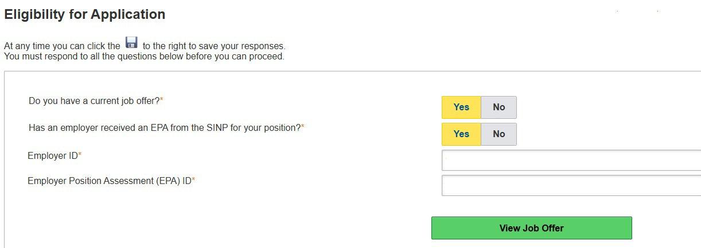
Ви повинні ввести ID роботодавця та ID EPA. Система перевірить цю інформацію, включно з вашою датою народження. Якщо вся інформація збігається, при виборі “View Job Offer” (Переглянути пропозицію роботи) відкриється сторінка інформації про пропозицію роботи.
Якщо ви НЕ подаєте заявку за напрямами Agriculture Talent Pathway, Innovation and Tech Talent Pathway або Health Talent Pathway, будь ласка, дайте відповідь NO (Ні) на наступні питання:

Після підтвердження того, що у вас є чинна пропозиція роботи, наступна серія відповідей приведе вас до:
Підкатегорія «Іноземний кваліфікований працівник – з пропозицією працевлаштування» (International Skilled Worker – With Employment Offer Sub-Category)
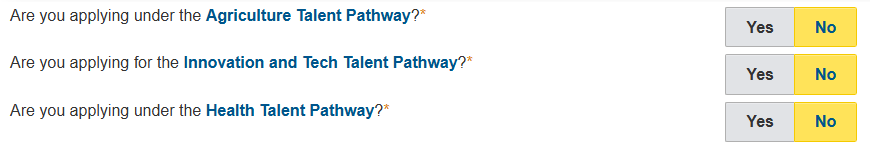
Якщо ви наразі не перебуваєте в Саскачевані за чинним дозволом на роботу і маєте щонайменше один рік досвіду роботи за останні десять років за передбачуваною професією.
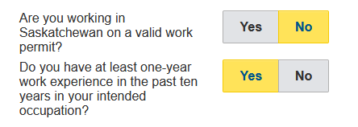
Якщо ви наразі працюєте в Саскачевані за чинним дозволом на роботу, НЕ є іноземним студентом із дозволом на роботу після закінчення навчання (Post-Graduation Work Permit) і маєте щонайменше один рік досвіду роботи за останні десять років за передбачуваною професією.
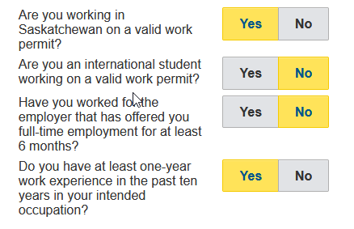
Якщо ви іноземний студент, який працює за чинним дозволом на роботу, який закінчив навчальний заклад за межами Саскачевана:
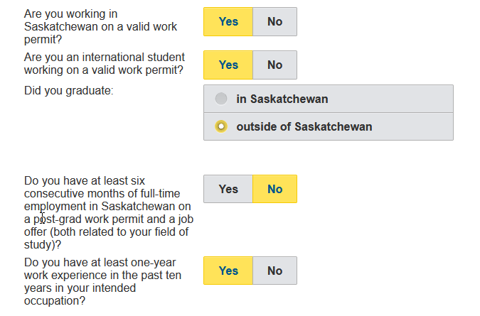
Якщо ви іноземний студент, який працює за чинним дозволом на роботу, який закінчив навчальний заклад у Саскачевані, але не відповідає критеріям категорії “Студент” (Student category):
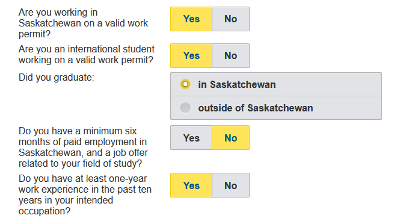
3.1.c Напрям Agriculture Talent Pathway
Виберіть «Yes» (Так), якщо ви подаєте заявку за цією категорією, а потім виберіть NOC вашої передбачуваної професії у випадному списку:
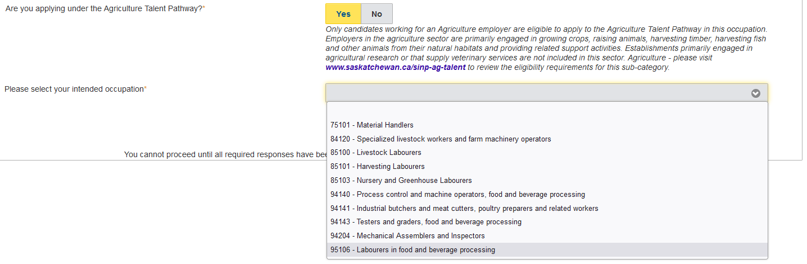
3.1.d Напрям Innovation and Tech Talent Pathway
Виберіть «Yes» (Так), якщо ви подаєте заявку за підкатегорією Innovation and Tech Talent Pathway.
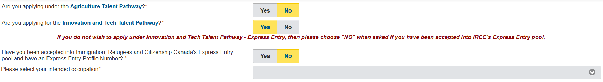
Виберіть NOC вашої передбачуваної професії у випадному списку:
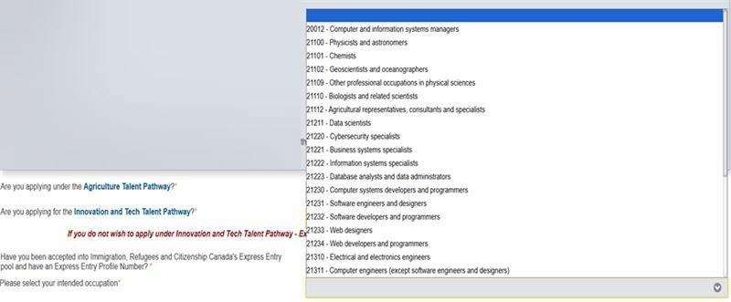
У вас повинна бути вища або середня спеціальна освіта (post-secondary education), що стосується запропонованої вам роботи (ступінь магістра чи бакалавра; або трирічний ступінь в університеті чи коледжі; або диплом, що вимагає двох років навчання в університеті, коледжі, ремісничому чи технічному училищі, або іншому вищому навчальному закладі).

Виберіть «Yes» (Так) для подання заявки за підкатегорією Innovation and Tech Talent Pathway, а потім виберіть «Yes» (Так) на питання «Чи були ви прийняті до пулу Express Entry Міністерства імміграції, біженців і громадянства Канади (IRCC) і чи є у вас номер профілю?». Потім ви зможете ввести свій номер профілю Express Entry та код перевірки здобувача (Job Seeker Validation Code).
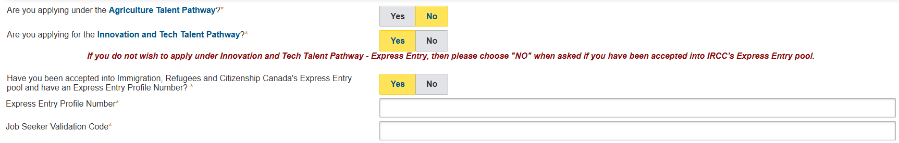
Виберіть NOC вашої передбачуваної професії у випадному списку:
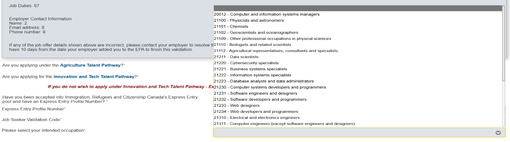
У вас повинна бути вища або середня спеціальна освіта (post-secondary education), що стосується запропонованої вам роботи (ступінь магістра чи бакалавра; або трирічний ступінь в університеті чи коледжі; або диплом, що вимагає двох років навчання в університеті, коледжі, ремісничому чи технічному училищі, або іншому вищому навчальному закладі).
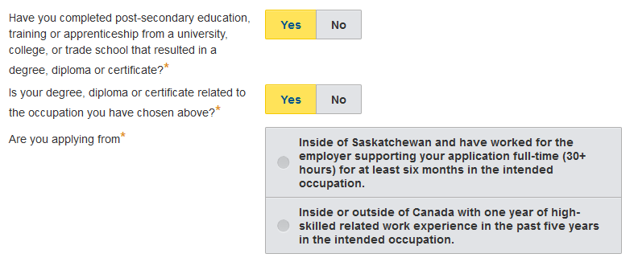
3.1.e Напрям Health Talent Pathway – Non-Express Entry
Виберіть «Yes» (Так), якщо ви подаєте заявку за напрямом Health Talent Pathway.
Потім виберіть NOC вашої передбачуваної професії у випадному меню:
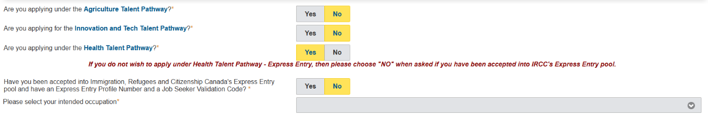
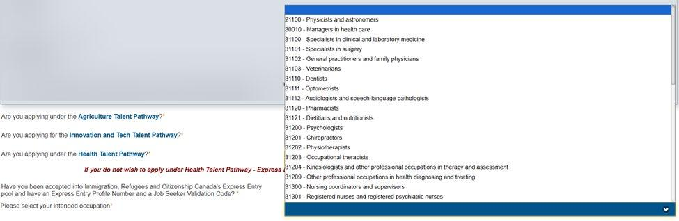
Маєте профіль Express Entry, і NOC — 44101. Примітка: NOC 44101 не підходить для Express Entry.
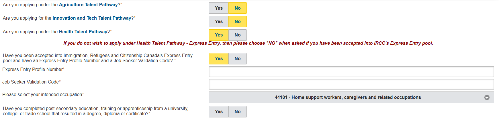
Маєте профіль Express Entry, ваш NOC НЕ 44101, і ви подаєте заявку, перебуваючи на території Саскачевана.
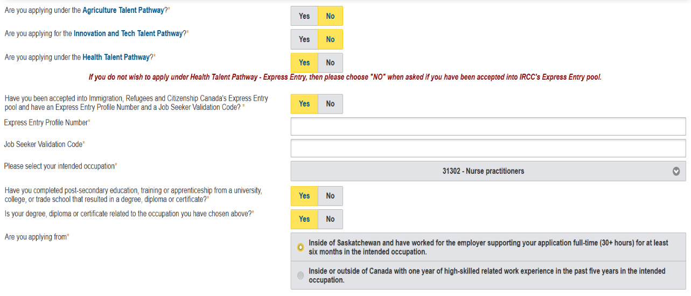
Маєте профіль Express Entry, ваш NOC НЕ 44101, і ви подаєте заявку, перебуваючи на території Канади або за її межами:
3.1.f Досвід роботи в Саскачевані – Чинний дозвіл на роботу (Saskatchewan Experience – Existing Work Permit)
Маєте досвід роботи не менше шести місяців (780 годин) на умовах повної зайнятості (понад 30 годин на тиждень) на посаді у роботодавця, який надав вам схвалення EPA, за наявності чинного дозволу на роботу. Досвід роботи повинен бути безперервним.
Виберіть відповідний варіант із випадного списку для NOC професії, за якою ви працюєте.
*** Ця категорія призначена для тих, хто подає заявку за будь-яким із критеріїв у випадному списку «Я працюю» (I am working), включно з професіями у сфері гостинності та водіїв-далекобійників.
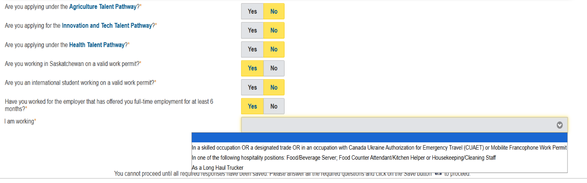
3.1.g Досвід роботи в Саскачевані – Студент (Saskatchewan Experience – Student)
Вища або середня спеціальна освіта (Post-secondary education), здобута в Саскачевані: У вас повинно бути не менше шести (6) місяців роботи на умовах повної зайнятості (або 960 годин) у Саскачевані за спеціальністю, пов'язаною з вашою галуззю навчання, і дозвіл на роботу після закінчення навчання (Post Graduation Work Permit), виданий Міністерством імміграції, біженців і громадянства Канади (IRCC).
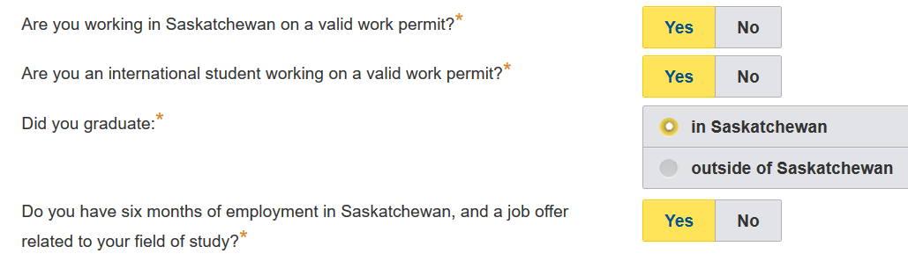
Власники дозволу на роботу після закінчення навчання (PGWP), які закінчили визначений навчальний заклад (Designated Learning Institute) за межами Саскачевана, можуть подавати заявки лише за напрямами Health Talent Pathway, Agriculture Talent Pathway, Innovation and Tech Talent Pathway та International Skilled Worker: Employment Offer за відповідною професією.
Натисніть кнопку збереження, щоб зберегти ваші відповіді, і натисніть кнопку перевірки, щоб перевірити категорію заявки, за якою ви подаєтеся.
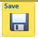
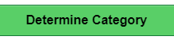
Якщо показана категорія не та, за якою ви маєте намір подати заявку, ви можете змінити свої відповіді, натиснувши на відповідну кнопку, або натиснувши «No» (Ні) для отримання додаткової інформації.
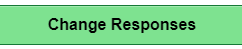
Якщо показана категорія правильна, натисніть кнопку «Yes» (Так) і продовжіть оформлення заявки.
3.2 Сітка балів для кваліфікованих працівників (Skilled Worker Points Grid)

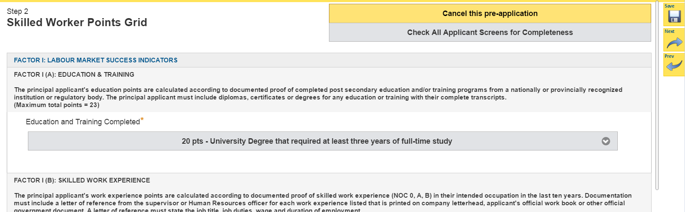
Натисніть Save (Зберегти), потім Next (Далі).
3.3 Поточне місце проживання та місце поселення (Current Residency and Settlement Destination)

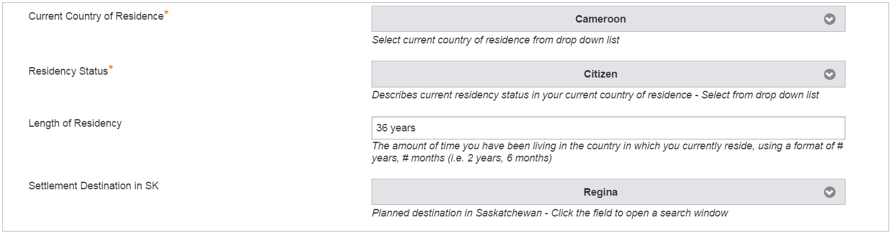
3.4 Дані заявника (Applicant Details)
- Ваш вік розраховується системою OASIS на основі дати вашого народження.
- Введіть місто/населений пункт народження (Birth City/Town).
- Виберіть країну народження (Birth Country).
- Виберіть найвищий завершений рівень освіти (Highest Education Level completed).
- NOC передбачуваної професії (Intended Occupation NOC): Для заявок за програмами Express Entry та Occupation In-Demand у цьому полі буде вказано NOC, який ви вибрали раніше у своєму Вираженні зацікавленості (EOI), і його не можна змінити. Для напрямів Agriculture Talent, Innovation and Tech Talent, Health Talent Pathways, Employment Offer, Student і Existing Work Permit виберіть NOC вашої передбачуваної професії.
Натисніть Save (Зберегти), потім Next (Далі).
3.5 Завантаження ваших документів (Uploading your documents)
Не забудьте завантажити відскановану (читабельну) копію вашого документа відповідно до вимог. За можливості використовуйте ім'я файлу, що описує кожен документ, наприклад passport (паспорт), birth certificate (свідоцтво про народження) – це допоможе нам пришвидшити час обробки заявки.
Якщо ви раніше завантажували документи в розділі Files (Файли), ви можете лише переглядати та завантажувати ці документи. Будь-яке нове завантаження повинно здійснюватися за допомогою кнопки «Upload File» (Завантажити файл).
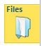
Ви не зможете просунутися далі в оформленні заявки, поки ваші документи не будуть завантажені для кожного розділу.
Щоб завантажити документ в OASIS, будь ласка, натисніть кнопку 'Upload File'.
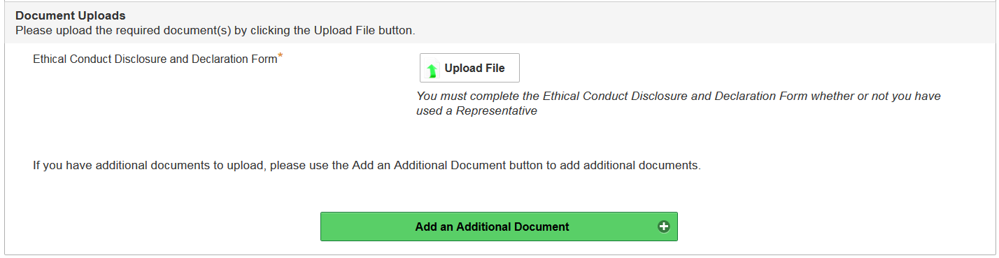
З'явиться спливаюче вікно, як показано нижче. Натисніть кнопку 'Browse' (Огляд), виберіть документ, який хочете завантажити, а потім натисніть 'Upload File' (Завантажити файл).
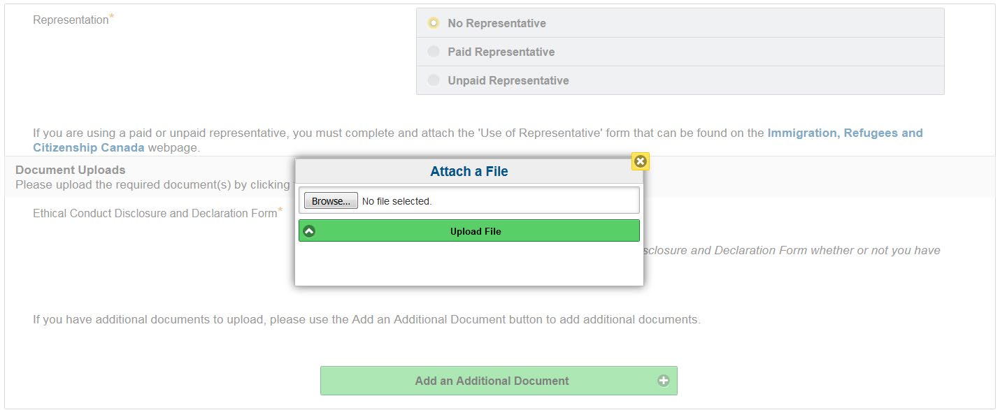
Щойно документ буде завантажено, у правому нижньому куті екрана з'явиться спливаюче повідомлення з підтвердженням:
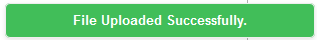
Ви можете завантажити (скачати) прикріплений документ, вибравши «Download File» (Скачати файл). Якщо ви прикріпили не той документ, видаліть його, натиснувши кнопку «Remove File» (Видалити файл).
Ви можете завантажити більше файлів/документів, натиснувши на кнопку нижче. Будь ласка, подивіться приклад скріншота.
Будь ласка, прочитайте та прийміть умови й положення для подання цієї заявки в SINP і натисніть Save (Зберегти), потім Next (Далі).
3.6 Розкриття інформації (Information Disclosure)
3.7 Громадянство (Citizenship)
Виберіть вашу країну громадянства (Country of Citizenship): Створіть ще один запис про громадянство, якщо у вас більше одного громадянства.
Натисніть Save (Зберегти), потім Next (Далі).
3.8 Документ про народження (Birth Document)
Виберіть тип документа про народження (Birth Document Type) із випадного списку.
Введіть ваше ім'я (First Name), по батькові/друге ім'я (Middle Name, якщо застосовно) та прізвище (Family/Last Name) при народженні так, як вони вказані у вашому документі про народження. Ви можете залишити поле порожнім, якщо воно до вас не стосується (наприклад, Middle Name).

3.9 Паспорт (Passport)
- Виберіть країну, яка видала паспорт, із випадного списку.
- Номер паспорта (Passport Number) і дата закінчення терміну дії паспорта (Passport Expiry Date) будуть заповнені автоматично з екрана “Дата народження та адреса” (Birthdate and Address Screen).
Зверніть увагу, що вам не потрібно створювати записи для ваших старих/прострочених паспортів.

3.10 Сімейний стан (Marital Status)
Виберіть ваш поточний сімейний стан із випадного списку:
Якщо ви неодружені/незаміжні (Single), шлюб анульовано (Annulled Marriage), проживаєте окремо на законних підставах (Legally Separated) або вдівець/вдова (Widowed), ваш екран повинен виглядати так:
Для цивільного шлюбу (Common-Law), розлучених (Divorced) або тих, хто перебуває у шлюбі (Married):
- Введіть ваші попередні ім'я та прізвище так, як вони вказані в документі про сімейний стан, і введіть дату, коли ви та ваш(а) чоловік/дружина вступили у вибраний сімейний стан.
Ви повинні створити ще один екран сімейного стану, якщо у вас більше одного (1) статусу (наприклад, якщо ви були розлучені, а зараз перебуваєте у шлюбі), натиснувши на цю кнопку:


3.11 Освіта (Education)
У розділі “Освіта” ви повинні відповісти на наступні питання: Виберіть ваш найвищий рівень освіти (highest level of Education).
Якщо ваша передбачувана професія або пропозиція роботи вимагає професійної сертифікації чи ліцензування, виберіть «Yes» (Так) на наступне питання; у протилежному випадку виберіть «No» (Ні).
Якщо у вас є пропозиція роботи і ви хочете дізнатися про вимоги до ліцензування, будь ласка, ознайомтеся з наступними посиланнями:
Якщо у вас немає пропозиції роботи і ви хочете дізнатися про вимоги до ліцензування, будь ласка, відвідайте:
Ви знайдете додаткову інформацію про професійну сертифікацію чи ліцензування в розділі 3.12 (наступний розділ) цього посібника.
Якщо ви подаєте заявку за категорією, яка не вимагає освіти (наприклад, Existing Work Permit або ISW-With Employment Offer, і не претендуєте на бали за освіту), ви можете натиснути «Not Applicable» (Не застосовується) на наступне питання. У протилежному випадку дотримуйтесь кроків «Введення/Зміна освіти» (Enter/Change Education) нижче. Після введення всіх даних про вашу освіту виберіть «Yes» (Так) і натисніть Save.
3.11.a Введення/Зміна освіти (Enter/Change Education)
Щоб ввести дані про вашу освіту (Education Credentials), натисніть на значок у правому верхньому куті екрана.
На екрані “Освіта” введіть таку інформацію так, як вона вказана у вашому дипломі про вищу/середню спеціальну освіту, профільному дипломі чи сертифікаті: Country (Країна), Start Date (Дата початку) та End Date (Дата закінчення) у форматі ДД-Міс-РРРР (DD-Mon-YYYY), Institution (Навчальний заклад, де було здобуто освіту), і Specialty (Спеціальність / програма навчання).
Якщо ви перебуваєте в Канаді, виберіть провінцію, в якій було здобуто вашу вищу/середню спеціальну освіту.
Натисніть Upload File, потім виберіть Browse (Огляд), щоб завантажити копію ваших документів про освіту. Знайдіть документ у вашій файловій директорії, виберіть документ і натисніть Upload File (Завантажити файл). Будь ласка, завантажте ваш документ там, де це застосовно, як показано нижче:

Натисніть Save (Зберегти).
Натисніть кнопку нижче, щоб додати ще один запис.
Натисніть кнопку нижче, щоб повернутися на головний екран.
Натисніть кнопку нижче, щоб перевірити повноту записів про освіту.
3.12 Документи про регулювання або ліцензування та Оцінка документів про освіту (Regulatory or Licensing Credentials and Education Credentials Assessment)
Документи про регулювання або ліцензування (Regulatory or Licensing Credentials)
Якщо ви маєте намір працювати за професією, яка регулюється в Саскачевані та вимагає обов'язкової (примусової) сертифікації чи ліцензування в Саскачевані, ви повинні отримати підтвердження права на отримання ліцензії Саскачевана для роботи за цією професією до подання заявки в SINP. Підтвердження права на отримання ліцензії Саскачевана від регулюючого органу вимагається як частина вашої заявки в SINP. Якщо ваша заявка не містить цього підтвердження, то SINP може відхилити вашу заявку, і ви зможете подати її повторно, коли отримаєте це підтвердження.
Якщо ви маєте намір працювати за КВАЛІФІКОВАНОЮ РОБОЧОЮ СПЕЦІАЛЬНІСТЮ (SKILLED TRADE), ви повинні мати кваліфікаційний сертифікат (також відомий як лист-запрошення) за вашою спеціальністю від Комісії з учнівства та торгової сертифікації Саскачевана (Saskatchewan Apprenticeship & Trade Certification Commission).
Будь ласка, перейдіть за посиланням нижче для отримання додаткової інформації про регульовані професії або вимоги до ліцензування:
Оцінка документів про освіту (Education Credentials Assessment - ECA)
Заявники, які подають заявку через Express Entry, Occupation in Demand, International Skilled Worker with Employment Offer і Health Talent Pathway (виключаючи робочі спеціальності), повинні надати Оцінку документів про освіту (ECA) від уповноваженої організації.
Будь ласка, перейдіть за посиланням нижче для отримання інформації про отримання Оцінки документів про освіту (ECA):
Для підкатегорій, що вимагають ECA, ви повинні завантажити копію вашого ECA на головній сторінці “Освіта” для всієї освіти, здобутої за межами Канади.
Натисніть значок, потім виберіть Browse (Огляд). Знайдіть документ у вашій файловій директорії, виберіть документ і натисніть Upload File (Завантажити файл).

Зробіть те саме для ваших Документів про регулювання або ліцензування (ліцензія Саскачевана), якщо застосовно.
Щоб перевірити повноту екранів освіти, у головному записі “Освіта” натисніть значок.
Натисніть Save (Зберегти), потім Next (Далі).
3.13 Досвід роботи (Work Experience)
Вкажіть свій досвід роботи, відповівши «Yes» (Так) на питання:
Натисніть Save (Зберегти).
Натисніть Enter/Change Work Experience, щоб створити екран досвіду роботи.
Заповніть обов'язкові поля:
- Виберіть країну (Country).
- Знайдіть і виберіть NOC ID, який відповідає вашому досвіду роботи, ввівши не менше трьох символів.
- Якщо країною вашого досвіду роботи є Канада, вам необхідно заповнити поле «Провінція» (Province).
- Введіть дату початку (Start Date) і дату закінчення (End Date) у форматі ДД-Міс-РРРР (DD-Mon-YYYY).
- Введіть Employer — ім'я роботодавця (назва компанії).
- Введіть Employer Contact Name — контактну особу роботодавця.
- Введіть City/Town — місце роботи (місто/населений пункт).
- Введіть вашу посаду (Position Title) під час роботи у цього роботодавця.
Виберіть тип документа, виданого державою (який ви будете надавати), із випадного меню:
Завантажте документ, виданий державою (Government issued documentation):
Завантажте ваш рекомендаційний лист із місця роботи (Work Experience reference letter):
Щоб завантажити документи, натисніть значок, потім виберіть Browse (Огляд). Знайдіть документ у вашій файловій директорії, виберіть документ і натисніть Upload File (Завантажити файл).
Ви можете завантажити більше файлів/документів, натиснувши на кнопку значок.
Натисніть Save (Зберегти).
Якщо ваш досвід роботи був здобутий у Саскачевані, ви повинні надати докази проживання та працевлаштування в провінції.
Щоб завантажити документи, натисніть значок, потім виберіть Browse (Огляд). Знайдіть документ у вашій файловій директорії, виберіть документ і натисніть Upload File (Завантажити файл).

Ви можете завантажити більше файлів/документів, натиснувши на кнопку значок.
Натисніть Save (Зберегти).
Обов'язкові документи для підтвердження досвіду роботи:
- офіційний рекомендаційний лист від роботодавця, роздрукований на фірмовому бланку компанії, який включає:
- ім'я заявника, контактну інформацію компанії (адресу, номер телефону та адресу електронної пошти), а також ім'я, посаду і підпис безпосереднього керівника або співробітника відділу кадрів компанії, разом з їхнім номером телефону та адресою електронної пошти.
- усі посади, які обіймалися під час роботи в компанії, разом з назвою посади, обов'язками і відповідальністю, статусом роботи (якщо це поточна робота), датами роботи в компанії, кількістю робочих годин на тиждень (загальна кількість годин, відпрацьованих у Саскачевані для заявників-студентів) і річною заробітною платою плюс пільги.
- якщо заявник є самозайнятим: установчі документи або інші докази володіння бізнесом, докази доходу від самозайнятості та документація від третіх осіб із зазначенням наданих послуг разом із деталями оплати.
Самостійно заявлені основні обов'язки або афідевіти не приймаються як доказ досвіду роботи чи самозайнятості.
Натисніть значок, щоб створити ще один запис.
Натисніть значок, щоб продовжити роботу з вашою заявкою.
Щоб перевірити повноту записів про досвід роботи, на головному екрані досвіду роботи натисніть значок.
Щойно цей розділ буде заповнено, позначте «Yes» (Так) на питання про досвід роботи:
Натисніть Save (Зберегти), потім Next (Далі).
3.14 Володіння англійською/французькою мовою (English/French Ability)
Виберіть тип підтвердження мови (Language Proof Type):
Заповніть обов'язкові поля так, як вони вказані у вашому документі:
Перейдіть за посиланням нижче для отримання інформації про мовні вимоги для SINP:
Натисніть значок, потім виберіть Browse (Огляд). Знайдіть документ у вашій файловій директорії, виберіть документ і натисніть Upload File (Завантажити файл).

Якщо у вас є дійсний мовний тест для другої офіційної мови, виберіть «Yes» (Так). У протилежному випадку виберіть «No» (Ні).
Якщо ви вибрали «Yes» (Так), будь ласка, вкажіть бали мовного тесту в наданих полях, і ви повинні прикріпити копію офіційних результатів мовного тесту.
Натисніть Save (Зберегти), потім Next (Далі).
3.15 Остання сторінка Частини 1 (Final Page of Part 1)
Виберіть «Yes» (Так), якщо у вас є родич у Саскачевані, у протилежному випадку виберіть «No» (Ні).

Виберіть «Yes» (Так), якщо ви подавали провінційну або федеральну заявку на імміграцію до Канади, у протилежному випадку виберіть «No» (Ні).
На цьому етапі вам не потрібно завантажувати будь-яку документацію.
Натисніть Save (Зберегти), потім натисніть значок.
Якщо ви все зробили правильно, з'явиться це повідомлення:
Натисніть значок, щоб продовжити роботу з вашою заявкою.
3.16 Внесення змін до Частини 1 та Даних заявника (Making a Change on Part 1 and Applicant Details)
Якщо вам потрібно внести зміни до вашої попередньої заявки та/або даних заявника:
- Натисніть кнопку Home (Головна), якщо потрібно.
- Натисніть Continue (Продовжити) в розділі Applicant Details заявки SINP.
- Натисніть на запис Applicant Details-Final Page, натисніть Make Changes to Part 1 (Внести зміни до Частини 1).
- Внесіть ваші зміни або завантажте документи.
- Коли ви закінчите, переконайтеся, що натиснули значок.
Натисніть значок, щоб продовжити.
4.0 Екрани заявки для кваліфікованих фахівців (Skilled Worker Application Screens)
Після того як ви натиснете кнопку Create Part 2 (Створити Частину 2), екран Application (Заявка) з'явиться в лівій частині екрана.
4.1 Екран заявки (Application Screen)
Перший екран покаже категорію заявки. Нижче наведено приклад екрана для категорії International Skilled Worker – Express Entry:
Збір у розмірі 500 доларів США вимагається для всіх категорій SINP. Ви повинні вказати, чи належить кредитна картка, використана для оплати реєстраційного збору, головному заявнику або чоловіку/дружині, зазначеному(ій) у заявці:
Якщо використана кредитна картка належить іншій особі, будь ласка, вкажіть спорідненість власника кредитної картки із заявником і причину оплати:
4.2 Зв'язок із Саскачеваном (Connection to Saskatchewan)
Виберіть «Yes» (Так) на наведене вище питання, якщо до вас стосується один із наступних пунктів:
- Навчалися в Саскачевані (Studied in Saskatchewan)
- Працювали в Саскачевані (Worked in Saskatchewan)
- Близький родич у Саскачевані (Close Relative in Saskatchewan)
У протилежному випадку виберіть «No» (Ні) і натисніть «Next» (Далі).
4.2.a Навчання в Саскачевані
Якщо ви навчалися в Саскачевані і претендуєте на бали, заповніть поля, як показано нижче:
Якщо ви претендуєте на бали за навчання в Саскачевані, ви повинні надати такі документи:
- сертифікати про освіту/професію, ступені або дипломи з офіційними транскриптами (де застосовно), із зазначенням навчальних закладів, які ви відвідували, або пройдених курсів; або
- лист від реєстратора з підтвердженням того, що ви навчалися в навчальному закладі Саскачевана.
4.2.b Досвід роботи в Саскачевані
Якщо у вас є досвід роботи в Саскачевані, заповніть поля, як показано нижче:
Якщо ви претендуєте на бали за роботу в Саскачевані, ви повинні надати документи для підтвердження того, що ви раніше працювали в Саскачевані щонайменше 12 місяців за останні п'ять років. Вам необхідно надати таке:
- Рекомендаційні листи від вашого(их) попереднього(іх) роботодавця(ів), написані на офіційному бланку компанії та підписані уповноваженим представником компанії із зазначенням його імені та посади, а також контактної інформації. У кожному листі повинно бути зазначено таке:
- ваша посада;
- дати роботи; і
- ваші основні обов'язки/відповідальність.
Щоб підтвердити свій досвід роботи в Саскачевані, ви повинні завантажити рекомендаційний лист.
4.2.c Близький родич у Саскачевані
Якщо у вас є близький родич у Саскачевані і ви претендуєте на бали, заповніть обов'язкове(і) поле(я), як показано нижче:
Якщо ви претендуєте на бали за близького члена сім'ї, ви повинні надати від нього таке:
- свідоцтво про народження, свідоцтво про шлюб та/або будь-які інші офіційні державні документи про освіту чи релігійні документи, що підтверджують вашу спорідненість із близьким родичем. Будь ласка, зверніть увагу: SINP не приймає афідевіти.
- копію карти постійного резидента чи громадянина Канади вашого родича, або канадського паспорта;
- доказ того, що вони проживають у Саскачевані останні дванадцять місяців і фінансово незалежні:
- рахунки за комунальні послуги за останні дванадцять місяців від SaskPower, SaskEnergy або міського/муніципального управління. (Ми не приймаємо рахунки за телефон, мобільний зв'язок чи кабельне телебачення);
- Медична картка Саскачевана (Saskatchewan Health Card) або Водійське посвідчення Саскачевана (Saskatchewan Driver's license);
- доказ того, що член сім'ї є зареєстрованим орендарем за адресою в Саскачевані (договір оренди та квитанції про оплату оренди АБО документ, що підтверджує право власності) та імена інших мешканців за цією адресою, включно з їхньою спорідненістю; і
- доказ отримання доходу за останні три місяці.
Якщо ваш близький родич підтримав іншого заявника, ви можете отримати попереджувальне повідомлення. Близькі члени сім'ї можуть підтримувати лише одну заявку одночасно (одне домогосподарство може підтримувати одну заявку одночасно). Якщо ваш близький член сім'ї вже підтримує заявку SINP, він не може підтримати вашу заявку, поки попередній номінант, якого він підтримує, не проживе і не пропрацює в Саскачевані щонайменше шість місяців.
Якщо ваш близький родич підтримав іншого заявника, ви повинні вказати, чи в'їхав попередній заявник до Канади і чи прожив у Саскачевані щонайменше шість місяців. Якщо так, вам потрібно буде завантажити докази того, що попередній заявник успішно оселився в Саскачевані щонайменше шість місяців тому.
Якщо ваш близький родич наразі підтримує іншу заявку, і цей заявник не оселився в Саскачевані протягом щонайменше шести місяців, ви не можете претендувати на отримання або отримати 20 балів за цього родича. Якщо ви виберете «Ні» (No), ви отримаєте попереджувальне повідомлення нижче. Зверніть увагу, якщо ви продовжите подання заявки без близького родича після того, як заявили бали за родича у своєму Вираженні зацікавленості (Expression of Interest), вашу справу буде повернуто, а збір не буде відшкодовано.
Якщо OASIS не виявить, що ваш родич наразі підтримує іншого родича, ви не отримаєте попереджувальне повідомлення. Зверніть увагу, що навіть якщо ви не отримаєте попередження, ваш близький родич все ще може підтримувати старішу заявку. У вашу відповідальність входить забезпечення того, щоб ваш близький родич мав право підтримати вашу заявку.
Натисніть кнопку створення запису, щоб створити запис для вашого родича, який наразі проживає в Канаді.
Натисніть значок, потім виберіть Browse (Огляд). Знайдіть документ у вашій файловій директорії, виберіть документ і натисніть Upload File (Завантажити файл).

Ви можете завантажити додаткові файли/документи, натиснувши на кнопку значок.

4.3 Федеральні форми (Federal Forms)
Нижче наведено обов'язкові федеральні форми:
- IMM 0008 – Generic Application Form for Canada (Загальна форма заявки до Канади)

Натисніть значок, потім виберіть Browse (Огляд). Знайдіть документ у вашій файловій директорії, виберіть документ і натисніть Upload File (Завантажити файл).
Натисніть Save (Зберегти), потім Next (Далі).
Зробіть те саме для решти форм.
- IMM 5406 – Additional Family Information (Додаткова інформація про сім'ю)
- Schedule A – Background/Declaration
У правому верхньому куті екрана створіть наступні форми, якщо вони до вас стосуються:
- IMM 5476 – Використання послуг представника (Use of Representative)
- IMM 5475 – Дозвіл на розголошення особистої інформації (Authority to Release Personal Information)
Натисніть значок видалення, якщо ви додали форму помилково. Ви можете скачати форми за такими посиланнями:
- Іноземні кваліфіковані фахівці (International Skilled Workers) посилання, потім виберіть підкатегорію. Або
- Досвід роботи в Саскачевані (Saskatchewan Experience) посилання, потім виберіть підкатегорію.
4.4 Крок 1: Кнопки створення (Step 1 Create Buttons)
Натисніть кнопку(и) Create… (Створити), якщо це до вас стосується:
Натисніть кнопку Create, якщо ви наразі працюєте в Канаді.
Натисніть кнопку Create, якщо у вас є родич, який наразі проживає в Канаді.
Натисніть кнопку Create, якщо з вами до Канади їдуть члени сім'ї.

4.5 Дозвіл на роботу (Work Permit)
Запис про дозвіл на роботу буде створено автоматично, якщо ви подаєте заявку за категорією «Досвід роботи в Саскачевані» (Saskatchewan Experience). Якщо ви подаєте заявку за категорією «Іноземні кваліфіковані фахівці — з пропозицією працевлаштування» (International Skilled Category – With Employment Offer), але наразі працюєте в Канаді, будь ласка, створіть запис про дозвіл на роботу.
Заповніть обов'язкові поля точно так, як зазначено у вашому документі:

Натисніть значок, потім виберіть Browse (Огляд). Знайдіть документ у вашій файловій директорії, виберіть документ і натисніть Upload File (Завантажити файл).
Якщо у вас є відкритий дозвіл на роботу для подружжя (open spousal work permit), будь ласка, виберіть «Да» (Yes).
Натисніть Save (Зберегти), потім Next (Далі) для продовження.
4.6 Родич у Канаді (In-Canada Relative)
Запис «Родич, який наразі проживає в Канаді» (Relative currently residing in Canada) буде створено автоматично, якщо ви відповіли «Так» (Yes) на це питання:
Заповніть обов'язкові поля, як показано нижче:

Натисніть значок, потім виберіть Browse (Огляд). Знайдіть документ у вашій файловій директорії, виберіть документ і натисніть Upload File (Завантажити файл).
Натисніть Save (Зберегти).
Натисніть значок, щоб додати ще одного родича в Канаді.
Натисніть значок, щоб видалити екран, якщо він був доданий помилково.
4.7 Кошти на облаштування та План облаштування (Settlement Funds and Settlement Plan)
4.7.a План облаштування (Settlement Plan)
Вам необхідно створити та прикріпити план облаштування.

Завантажте ваш План облаштування, натиснувши на кнопку значок, потім виберіть Browse (Огляд). Знайдіть документ у вашій файловій директорії, виберіть документ і натисніть Upload File (Завантажити файл).
4.7.b Кошти на облаштування (Settlement Funds)
Ви повинні зберігати мінімальну суму коштів, необхідну для розміру вашої сім'ї, протягом щонайменше трьох місяців до подання заявки.
Заповніть обов'язкові поля в кожній послідовності, як показано нижче:
Ви повинні прикріпити копію виписки(ок) з вашого рахунку.

Натисніть значок, потім виберіть Browse (Огляд). Знайдіть документ у вашій файловій директорії, виберіть документ і натисніть Upload File (Завантажити файл).
Список прийнятних документів, що підтверджують наявність коштів на облаштування, показано під кнопкою завантаження, включно з кількістю місяців, протягом яких необхідна наявність коштів.
Якщо ви надаєте додаткові документи, що стосуються рахунку в певній послідовності, натисніть кнопку Add an Additional Document і завантажте документ.
Якщо ви надаєте інформацію про інший рахунок із коштами на облаштування, натисніть кнопку Add another Settlement Funds, щоб створити наступну послідовність.
Після того як ви закінчите введення даних Плану облаштування та Коштів на облаштування, натисніть Save (Зберегти), потім Next (Далі), щоб продовжити.
Необхідна документація для Коштів на облаштування:
Мінімально необхідна сума для вашої заявки опублікована на нашому сайті. Будь ласка, перейдіть за посиланням, виберіть категорію, за якою ви подаєте заявку, натисніть на вкладку «Required Documents» (Обов'язкові документи) і знайдіть «Required Documents, Settlement Funds» (Обов'язкові документи, Кошти на облаштування).
Докази наявності коштів повинні:
- являти собою офіційні листи, офіційні виписки та/або сертифікати від однієї або декількох фінансових установ.
- показувати, що кошти перебували на рахунку щонайменше 3 місяці до подання заявки і зберігалися протягом усього імміграційного процесу (термін дії не повинен закінчитися після подання заявки).
- бути на ім'я головного заявника або чоловіка/дружини або перебувати у спільному володінні.
Виписки по рахунках повинні містити детальну історію транзакцій щонайменше за три місяці, що передують поданню заявки, і включати тип валюти, ім'я власника рахунку, контактну інформацію фінансової установи, номери рахунків, транзакції та залишки.
Усі документи, видані не англійською чи французькою мовами, повинні супроводжуватися сертифікованим перекладом.
Щоб визначити, чи достатньо коштів на облаштування, виписка з рахунку повинна показувати, що коли баланс рахунку перебував на найнижчому рівні, він відповідав вимозі до коштів на облаштування для зазначеного розміру сім'ї.
Приймаються такі види коштів:
- Особисті розрахункові або ощадні рахунки
- Облігації
- Поліси страхування життя з грошовою вартістю
- Гарантовані інвестиційні сертифікати (GIC) або депозитні сертифікати
- Взаємні фонди (ПІФи)
- Резервні фонди (потрібен офіційний лист від організації резервного фонду із зазначенням суми доступних коштів)
- Зареєстровані пенсійні ощадні плани (RRSP)
- Акції
- Неоподатковувані ощадні рахунки (TFSA)
- Строкові вклади та строкові депозити (повинні бути дійсними на момент подання заявки і залишатися дійсними протягом усього процесу розгляду заявки)
- Казначейські векселі
Боргові зобов'язання, кредитні картки, кредитні лінії, золото, готівкові гроші, нерухомість або бізнес НЕ приймаються як кошти на облаштування.
4.8 Супроводжуючі та несупроводжуючі члени сім'ї (Accompanying and Non-Accompanying Family Member)
- молодше 22 років і не має чоловіка/дружини чи цивільного партнера; та/або
- перебувала на вашому фінансовому забезпеченні через психічне чи фізичне захворювання.
Батьки та брати/сестри головного заявника не можуть бути включені до заявки SINP.
На Кроці 1 натисніть кнопку Create a Family Member, якщо з вами до Канади їдуть члени сім'ї.
Заповніть обов'язкові поля, як показано нижче:
Натисніть Save (Зберегти).
Натисніть значок, якщо цей екран був створений помилково.
Натисніть кнопку Create/Change Application Screens for Family Member, щоб додати екрани для:
4.8.a Супроводжуючий утриманець молодше 18 років (Accompanying Dependant under 18 years of age)
- Документ про народження (Birth Document)
- Паспорт (Passport)
4.8.b Супроводжуючий утриманець від 18 до 21 року (Accompanying Dependant 18-21 years old)
- Документ про народження (Birth Document)
- Паспорт (Passport)
- IMM 5406 - Додаткова інформація про сім'ю (Additional Family Information)
- Schedule A – Історія/Декларація (Background/Declaration)
4.8.c Супроводжуючий чоловік/дружина (Accompanying Spouse)
- Документ про народження (Birth Document)
- Паспорт (Passport)
- IMM 5406 - Додаткова інформація про сім'ю (Additional Family Information)
- Schedule A – Історія/Декларація (Background/Declaration)
4.8.d Несупроводжуючий чоловік/дружина (Non-Accompanying Spouse)
- Екран не потрібен (No screen required)
4.8.e Несупроводжуючий утриманець старше 18 років (Non-Accompanying Dependant 18 years old or older)
- Екран не потрібен (No screen required)
4.8.f Несупроводжуючий утриманець молодше 18 років (Non-Accompanying Dependant under 18 years of age)
- Опіка/Аліменти (Custody/Child Support)
Ви повинні заповнити наступний екран і прикріпити необхідний(і) документ(и).
Документ про народження (Birth Document) – Заповніть Ім'я (First Name), Друге ім'я (Middle Name) (якщо застосовно) та Прізвище при народженні (Family Name at Birth) — так, як вони вказані в документі про народження.
Якщо у вас є член сім'ї, який народився в Канаді, ви повинні створити запис і прикріпити Свідоцтво про народження, щоб підтвердити канадське громадянство. Паспорт не потрібен.
Паспорт (Passport) – Заповніть Країну (Country), Номер паспорта (Passport Number) (без пробілів) та Дату закінчення терміну дії паспорта (Passport Expiry Date) (у форматі ДД-Міс-РРРР) так, як вони вказані у вашому документі.
Для Чоловіка/Дружини (Spouse) заповніть Попереднє Ім'я (Previous First Name), Попереднє Прізвище (Previous Last Name) та Дату вступу Чоловіка/Дружини у вибраний сімейний статус і прикріпіть необхідний(і) документ(и). Натисніть кнопку Create another Marital Status, щоб додати ще один запис про сімейний статус.
4.8.g IMM 5406 – Додаткова інформація про членів сім'ї (Additional Family Member Information)
Ви повинні скачати, заповнити і прикріпити цю федеральну форму.
4.8.h Schedule A – Історія/Декларація (Background Declaration)
Ви повинні скачати, заповнити і прикріпити цю федеральну форму.
Для кожного екрана натисніть значок Save, щоб зберегти введені дані, і значок Attach, щоб прикріпити необхідний(і) документ(и).

Натисніть значок, потім натисніть значок для продовження вашої заявки.
4.9 Пропозиція про роботу (Job Offer)
У записі «Пропозиція про роботу» поля будуть заповнені автоматично на основі значень EPA, які ви ввели в розділі «Відповідність вимогам» (Eligibility). Ви повинні ввести дату Пропозиції про роботу, завантажити Лист із пропозицією роботи і натиснути «validate» (перевірити/підтвердити).
Зверніть увагу, що ви не зможете подати заявку SINP, якщо перевірка пропозиції роботи не буде пройдена або якщо ви пропустите кінцевий термін подання, зазначений у вашому Затвердженні EPA (EPA Approval).
Лист із пропозицією роботи (Letter of Offer) повинен:
- бути адресований головному заявнику;
- містити назву посади, обов'язки та відповідальність, заробітну плату, пільги та контактну інформацію компанії;
- вказувати місцезнаходження (тобто місто/селище) вашої посади в Саскачевані;
- бути оформлений на фірмовому бланку компанії; і,
- бути підписаний роботодавцем.
Ви також повинні натиснути на кнопку Validate перед тим, як перейти до наступного кроку, у протилежному випадку ви не зможете подати заявку, оскільки вона буде позначена як неповна.
Натисніть Next (Далі) для продовження.
Завантажте копію вашого Листа з пропозицією роботи і натисніть значок Save, щоб зберегти введені дані.

4.10 Підтвердження ліцензії (Proof of Licensure)
Якщо ви подаєте заявку за напрямом «Пошук медичних талантів» (Health Talent Pathways), ви повинні надати копію своєї медичної ліцензії та заповнити наступні поля:
Зверніть увагу, що SRNA тепер називається Коледжем зареєстрованих медсестер Саскачевана (College of Registered Nurses of Saskatchewan - CRNS).

Натисніть значок Save, щоб зберегти введені дані, і значок Attach, щоб прикріпити необхідний(і) документ(и).
Натисніть Next (Далі) для продовження.
4.11 Водійське посвідчення (Driver's License)
Якщо ви подаєте заявку як водій вантажівки в підкатегорії «Чинний дозвіл на роботу» (Existing Work Permit Sub-Category), ви повинні мати чинне водійське посвідчення Саскачевана класу 1A (Class 1A Saskatchewan Driver's License).
Заповніть такі обов'язкові поля:
4.11.1 Категорія/Дозвіл (Endorsement)
Додайте запис про дозвіл. Це можна знайти у вашому водійському посвідченні:
Натисніть кнопку Create a Licence Endorsement, щоб додати ще один запис про дозвіл.
4.11.2 Обмеження (Restriction) (якщо застосовно)
Додайте запис про обмеження, якщо це до вас стосується. Це можна знайти у вашому водійському посвідченні.
Натисніть кнопку Create a Licence Restriction, щоб додати ще один запис про обмеження.
Прикріпіть копію вашого водійського посвідчення Саскачевана класу 1A (Class 1A Saskatchewan Driver's License).


Натисніть значок Save, щоб зберегти введені дані, і значок Attach, щоб прикріпити необхідний(і) документ(и).
4.12 Попередня заявка (Previous Application)
Якщо у вас є попередні провінційні або федеральні канадські заявки, ви повинні заповнити такі обов'язкові поля:
Прикріпіть остаточний(і) документ(и), отриманий(і) щодо вашої попередньої заявки, наприклад, Лист про відмову IRCC (IRCC Refusal Letter), Лист про невідповідність вимогам SINP (SINP Ineligible Letter) тощо.


Натисніть значок Save, щоб зберегти введені дані, і значок Attach, щоб прикріпити необхідний(і) документ(и).
Натисніть значок, щоб створити ще один запис.
Натисніть Next (Далі) для продовження.
4.13 Необхідні екрани заявки для кожної категорії (Required Application Screens for Each Category)
4.13.1 Іноземний кваліфікований фахівець (International Skilled Worker)
a. Затребувані професії (Occupations In-Demand):
- Кошти на облаштування та План облаштування (Settlement Funds and Settlement Plan)
- Родич, який наразі проживає в Канаді (Relative Currently Residing in Canada) (якщо застосовно)
- Зв'язок із Саскачеваном (Connection to Saskatchewan)
- Члени сім'ї (Family Members) (якщо застосовно)
- Федеральні форми (Federal Forms)
b. Express Entry:
- Кошти на облаштування та План облаштування (Settlement Funds and Settlement Plan)
- Родич, який наразі проживає в Канаді (Relative Currently Residing in Canada) (якщо застосовно)
- Зв'язок із Саскачеваном (Connection to Saskatchewan)
- Члени сім'ї (Family Members) (якщо застосовно)
- Федеральні форми (Federal Forms)
c. З пропозицією роботи (With Employment Offer):
- Пропозиція про роботу (Job Offer)
- Дозвіл на роботу (Work Permit) (якщо застосовно)
- Члени сім'ї (Family Members) (якщо застосовно)
- Федеральні форми (Federal Forms)
d. Напрям талантів у сільському господарстві (Agriculture Talent Pathway):
- Пропозиція про роботу (Job Offer)
- Дозвіл на роботу (Work Permit)
- Члени сім'ї (Family Members) (якщо застосовно)
- Федеральні форми (Federal Forms)
e. Напрям талантів у сфері інновацій і технологій (Innovation and Tech Talent Pathway):
- Пропозиція про роботу (Job Offer)
- Дозвіл на роботу (Work Permit) (якщо застосовно)
- Члени сім'ї (Family Members) (якщо застосовно)
- Федеральні форми (Federal Forms)
f. Напрям талантів у сфері інновацій і технологій – Express Entry (Innovation and Tech Talent Pathway – Express Entry):
- Пропозиція про роботу (Job Offer)
- Дозвіл на роботу (Work Permit) (якщо застосовно)
- Члени сім'ї (Family Members) (якщо застосовно)
- Федеральні форми (Federal Forms)
g. Напрям медичних талантів (Health Talent Pathway):
- Пропозиція про роботу (Job Offer)
- Медична ліцензія (Medical License)
- Дозвіл на роботу (Work Permit) (якщо застосовно)
- Члени сім'ї (Family Members) (якщо застосовно)
- Федеральні форми (Federal Forms)
h. Напрям медичних талантів – Express Entry (Health Talent Pathway – Express Entry):
- Пропозиція про роботу (Job Offer)
- Медична ліцензія (Medical License)
- Дозвіл на роботу (Work Permit) (якщо застосовно)
- Члени сім'ї (Family Members) (якщо застосовно)
- Федеральні форми (Federal Forms)
4.13.2 Досвід роботи в Саскачевані (Saskatchewan Experience)
a. Чинний дозвіл на роботу (Existing Work Permit):
- Пропозиція про роботу (Job Offer)
- Дозвіл на роботу (Work Permit)
- Водійське посвідчення (Driver's License) (якщо застосовно)
- Категорія/Дозвіл водійського посвідчення (Driver's License Endorsement) (якщо застосовно)
- Обмеження водійського посвідчення (Driver's License Restriction) (якщо застосовно)
- Члени сім'ї (Family Members) (якщо застосовно)
- Федеральні форми (Federal Forms)
b. Студенти (Students):
- Пропозиція про роботу (Job Offer)
- Дозвіл на роботу (Work Permit)
- Члени сім'ї (Family Members) (якщо застосовно)
- Федеральні форми (Federal Forms)
5.0 Перевірка екранів заявки та подання (Check Application Screens and Submit)
Натисніть кнопку Check All Application Screens and Submit, щоб подати вашу заявку. Переконайтеся, що ви перевірили всі попередження та помилки перед поданням.
Важливо, щоб усі необхідні документи були прикріплені до вашої заявки. Якщо ви подасте неповну заявку, в якій відсутні документи, вашу заявку буде відхилено, а ваш збір не буде повернено. Додаткові документи, надіслані після подання заявки, не будуть прийняті, якщо тільки вони не були запитані.
6.0 Оплата збору – Всі категорії SINP (Fee Payment – All SINP Categories)
Будь ласка, зверніть увагу, що ви не зможете вносити зміни до своєї заявки після здійснення платежу. Щойно збір буде оплачено, ваша заявка буде надіслана автоматично. Додаткові документи, надіслані після подання, не будуть прийняті.
Після натискання кнопки «Check All Application Screens and Submit» (Перевірити всі екрани заявки і подати) відображається сторінка рахунку (Invoice Page) із зазначенням суми до оплати. Статус рахунку перебуває у стані «Pending» (В очікуванні) до успішного завершення платежу.
Після введення даних вашої кредитної картки та перевірки суми до оплати натисніть «Pay» (Оплатити).
Після успішної оплати статус зміниться на «Payment Received» (Платіж отримано), і вашу заявку буде подано.
Натисніть кнопку «Go to Home Page» (На головну сторінку), щоб повернутися до вашої заявки. Ви можете переглянути рахунок, натиснувши на значок.
7.0 Заявку отримано (Application Received)
Ви отримаєте номер файлу після подання заявки:
Ви отримаєте лист-квитанцію протягом 24–48 годин після подання (наприклад: 9999999).
8.0 Запит на надання додаткової інформації (Request for Additional Information)
Якщо для обробки вашої заявки потрібні додаткові документи, ви отримаєте повідомлення від SINP через OASIS. Щоб перевірити ваше листування, ви можете натиснути на посилання, вказане в електронному листі, або увійти до облікового запису OASIS.
Щоб надіслати документи, будь ласка, увійдіть до свого облікового запису OASIS і натисніть «Submit Requested Documents» (Надіслати запитані документи). Завантажте запитаний(і) документ(и) у записі «Request Additional Information» (Запит додаткової інформації) і натисніть кнопку «Submit» (Надіслати).
Ви також можете отримати доступ до запису «Request Additional Information», натиснувши View Submitted Part 2 (Переглянути подану Частину 2).
Будь ласка, зверніть увагу, що документи, отримані електронною поштою, не приймаються. Ви повинні прикріпити всі документи через свій обліковий запис OASIS.
(Applicant home screen): Головний екран представника
(Representative home screen):
Якщо вам потрібен додатковий час для надсилання документів, ви можете надіслати запит, заповнивши форму нижче і натиснувши «Request Extension to Submit Documents» (Запросити продовження терміну подання документів).
Ваш запит на продовження може бути схвалений або відхилений. Ви отримаєте повідомлення про те, чи був ваш запит на продовження схвалений чи відхилений. Будь ласка, перед надсиланням запиту на продовження завантажте всі наявні у вас на даний момент документи, щоб частково або повністю задовольнити запит на надання інформації.
9.0 Оновлення номера профілю Express Entry та коду валідації здобувача (Update Express Entry Profile Number and Job Seeker Validation Code)
Якщо під час обробки ваш номер профілю Express Entry (Express Entry Profile Number) і код валідації здобувача (Job Seeker Validation Code) змінилися, ви можете оновити їх, відкривши свою заявку. У Частині 2 вашої заявки SINP (або на головній сторінці заявки) натисніть кнопку значок.
Відобразиться сторінка з назвою «Information Changes» (Зміни інформації), і ви зможете змінити дані свого профілю Express Entry, заповнивши відповідні поля. Після введення інформації натисніть кнопку «Save» (Зберегти), потім «Submit Changes» (Надіслати зміни).
Якщо ви вирішите скасувати цей крок, натисніть «Move to Part 2» (Перейти до Частини 2) без збереження або натисніть «Cancel Changes» (Скасувати зміни).
Ви можете повернутися до основних розділів заявки, натиснувши «Move to Part 2». Ви можете редагувати цю інформацію в будь-який час, поки ваш файл активний.
10.0 Процес другого розгляду (Second Review Process)
Якщо вашу заявку було визнано SINP такою, що не відповідає вимогам (ineligible), і ви вважаєте, що під час обробки заявки або при її оцінці на основі критеріїв, чинних на момент подання, було допущено помилку, ви можете запросити другий розгляд. У вас буде 30 днів з дати видачі SINP листа про невідповідність вимогам (ineligible letter), щоб зробити запит. Система не прийме жодного запиту після закінчення 30 днів.
Щоб запросити другий розгляд, під Частиною 2 вашої заявки, будь ласка, натисніть кнопку «Request for Second Review» (Запит на другий розгляд).
З'явиться вікно підтвердження, і якщо ви згодні із зазначеними умовами й положеннями, будь ласка, натисніть кнопку «Create Appeal Request» (Створити запит на апеляцію).
Буде створено запис запиту на апеляцію для заповнення, і ви зможете прикріпити документацію на підтримку вашого запиту.
Якщо ви ще не подали апеляцію, з головного екрана заявки ви можете переглянути запит на другий розгляд, що очікує, натиснувши кнопку «View Second Review Request» (Переглянути запит на другий розгляд).
У вас буде 30 днів з дати видачі SINP листа про невідповідність вимогам (ineligible letter), щоб зробити запит. Система не прийме жодного запиту після закінчення 30 днів.
Після закінчення 30-денного вікна ви не зможете запросити другий розгляд.
Якщо ви не подали апеляцію, а 30-денне вікно минуло, ви не зможете надіслати запит, що очікує.
Щоб подати апеляцію протягом 30-денного вікна, будь ласка, натисніть «Submit Appeal Request» (Надіслати запит на апеляцію).
З'явиться попереджувальне повідомлення, яке інформує про те, що вас буде перенаправлено для оплати збору за другий розгляд.
Якщо ви натиснете «Yes, Continue» (Так, продовжити), вас буде перенаправлено на сторінку оплати. Примітка: Якщо ви натиснете «No, Go Back» (Ні, повернутися), вас буде перенаправлено назад на сторінку запиту апеляції.
Після введення даних вашої кредитної картки натисніть «Pay» (Оплатити).
Після успішної оплати ваш запит на другий розгляд буде надіслано автоматично. Ви отримаєте повідомлення про те, що ваш запит на другий розгляд отримано.
Запит на другий розгляд може бути відхилений, якщо ви не зможете обґрунтувати причину для перегляду. Щойно запит буде відхилено, вашу справу буде закрито. Якщо ваш запит буде прийнято, буде створено справу про другий розгляд, і ви отримаєте повідомлення електронною поштою про те, що вашу заявку передано на другий розгляд.
Якщо ви вирішите відкликати свій запит на другий розгляд, будь ласка, натисніть кнопку «Withdraw Second Review Request» (Відкликати запит на другий розгляд).
З'явиться попереджувальне повідомлення для підтвердження того, що ви відкликаєте свій запит на другий розгляд.
- Кінець посібника -
Дякуємо вам за інтерес до Програми імміграції номінантів Саскачевана (Saskatchewan Immigrant Nominee Program).